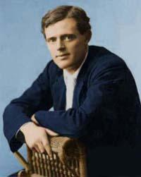

Короткий опис
За своєю структурою це типовий американський «роман успіху», в якому, втім, передбачається структура роману про «американську трагедію», що отримала яскраве втілення в «Американській трагедії» Т. Драйзера. Виходець із соціальних низів, охоплений спрагою успіху, Мартін Іден уособлює ідеологію соціал-дарвінізму Г. Спенсера – англійського філософа, котрий сильний впливав на погляди і філософію Лондона.

Про автора
Джек Лондон
(рік народження - 1890р)
Джек Лондон рано почав працювати: ще школярем продавав ранішні і вечірні газети. Після закінчення початкової школи у віці чотирнадцяти років влаштувався на консервну фабрику робітником. Робота була дуже важкою, і він пішов з фабрики. Був «піратом на устриць»: ловив устриці в бухті Сан-Франциско, що було заборонено. У цей час вживав надмірну кількість алкоголю, як для свого віку. Його товариші по службі вважали, що якщо він не змінить спосіб життя, то помре через рік-два.
У 1893 році найнявся матросом на промислову шхуну, яка відправлялася ловити котиків до берегів Японії і в Беринговому морі. Перше плавання дало Лондону багато яскравих вражень, які лягли потім в основу багатьох його морських розповідей і романів.
Перший нарис Лондона «Тайфун біля берегів Японії», за який він отримав премію однієї з газет Сан-Франциско, став початком його літературної кар'єри.
ЗМІСТ
За своєю структурою це типовий американський «роман успіху», в якому, втім, передбачається структура роману про «американську трагедію», що отримала яскраве втілення в «Американській трагедії» Т. Драйзера. Виходець із соціальних низів, охоплений спрагою успіху, Мартін Іден уособлює ідеологію соціал-дарвінізму Г. Спенсера – англійського філософа, котрий сильний впливав на погляди і філософію Лондона.
Зокрема, письменнику імпонувала ідея Спенсера про те, що людина розвивається від нижчих форм життя до стану соціальної гармонії завдяки абсолютному індивідуалізму. Останнє переконання з неминучістю призвело Лондона (і його автобіографічного героя) до ніцшеанства, до віри в торжество інтелекту і волі надлюдини. Власне весь шлях Мартіна Ідена – це спроба досягти рівня ніцшеанської «надлюдини» в рамках особистої долі.
Мартін Іден сповнений рішучості вибитися «в люди» – домогтися слави, багатства, любові. Випадково познайомившись з Рут, дочкою банкіра Морза, Мартін Іден ставить собі за мету завоювати дівчину, бо Рут і її сім’я в очах простого хлопця з низів є втіленням того ваблячого світу, до якого він прагне. Мріючи про письменницький успіх, Мартін сподівається, що знайшовши на літературній ниві славу і гроші, він тим самим отримає і Рут.
Однак його чекає жорстоке розчарування: Рут і її близькі не розуміють і не приймають ідеалізму Мартіна і відносяться до його мрії про успіх як до дурного навіженства. Але і Мартін, ближче знайомлячись зі світом Морзів, з жахом виявляє духовну ущербність «вищого класу».
...